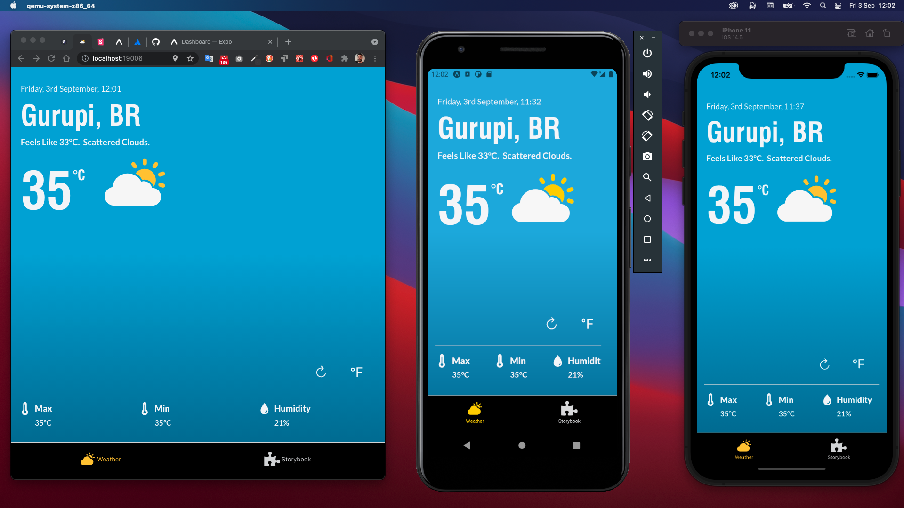
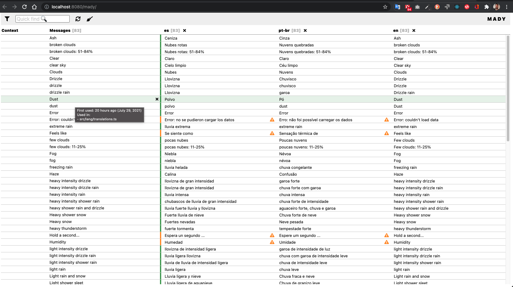
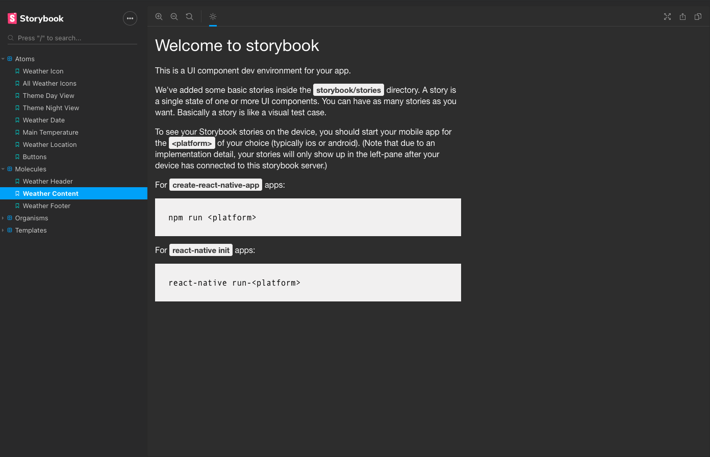

Weather App Demo 
Table of Contents
About
Weather Map is a demo project in React-Native. It runs embedded the Storybook with the components decoupled using Atomic Design pattern.
PWA Demonstration
Access the link Weather App Demonstration.

Install and Run
To install and run just clone it and run.
yarn install
and then, to start, run
yarn start
For Android run
yarn android
For iOS run
yarn ios
For Web (expo), run
yarn web
The Metro Blunder will be available at http://localhost:19002/ by default.
Project Structure
The project folder structure respect the Feature based development. Each Feature folder contain the same structure being some folders optional. All of them refers to the App Feature as base for styles, contexts, services, constants, components etc... but can contain one or more of these as needed.
.
├── assets # Compilation assets
├── docs #
Typedoc documentation
├── android # Android
Source Code4
├── ios # iOS Source
Code
├── public # public folder for Web
generation
├── src
│ ├──
@types
│ ├── app # App Feature
(default)
│ │ ├── assets # Application Assets
(icons | fonts)
│ │ ├── components # Atomic
design
│ │ │ ├── atoms # Atoms
Components
│ │ │ ├── molecules # Molecules
Components
│ │ │ ├── organisms # Organisms
Components
│ │ │ ├── templates # Templates
Components
│ │ ├── constants # Project
Constants
│ │ ├── contexts # React Contexts,
Context Interfaces and Reducers
│ │ │ ├── app # App Context and App Reducer
│ │ ├── hooks # Custom Hooks
│ │ ├── locales #
Traslations (Mady)
│ │ ├── navigation #
Navigation container
│ │ ├── screens #
Screens
│ │ ├── services # Storage
Api
│ │ ├── styles # Global
styles
│ │ └── providers # Auxiliar functions
and classes
│ │ types... # Entities and
Types
├── storybook # Storybook
Feature
│ └── ... # ... uses the same
structure from App Featrure
├── weather #
Weather Feature
│ └── ... # ... uses the same
structure from App Featrure
└── ...
Translation
As an example of translation capabilities, it was added to this project, the support for three languages
pt-br, en, es and to generate de translations it was used Mady a local hosting tool for translation management.
To run Mady just type in the terminal
yarn translate
and the local app will be availabla at http://localhost:8080/mady/.

Storybook
The storybook framework was used to provide documentation for common graphic components, like buttons, toasts, inputs and templates.
To run StoryBook just type in terminal
yarn storybook
and the local app will be available at http://localhost:7007/.

Documentation
Documentation generation run Typedoc
yarn typedoc
yarn serve:docs
Access de generated documentation from http://127.0.0.1:8080
For README.md, run
yarn doctoc
License
MIT License
Copyright (c) 2021 Daniel
Permission is hereby granted, free of charge, to any person obtaining a copy of this software and associated documentation files (the "Software"), to deal in the Software without restriction, including without limitation the rights to use, copy, modify, merge, publish, distribute, sublicense, and/or sell copies of the Software, and to permit persons to whom the Software is furnished to do so, subject to the following conditions:
The above copyright notice and this permission notice shall be included in all copies or substantial portions of the Software.
THE SOFTWARE IS PROVIDED "AS IS", WITHOUT WARRANTY OF ANY KIND, EXPRESS OR IMPLIED, INCLUDING BUT NOT LIMITED TO THE WARRANTIES OF MERCHANTABILITY, FITNESS FOR A PARTICULAR PURPOSE AND NONINFRINGEMENT. IN NO EVENT SHALL THE AUTHORS OR COPYRIGHT HOLDERS BE LIABLE FOR ANY CLAIM, DAMAGES OR OTHER LIABILITY, WHETHER IN AN ACTION OF CONTRACT, TORT OR OTHERWISE, ARISING FROM, OUT OF OR IN CONNECTION WITH THE SOFTWARE OR THE USE OR OTHER DEALINGS IN THE SOFTWARE.